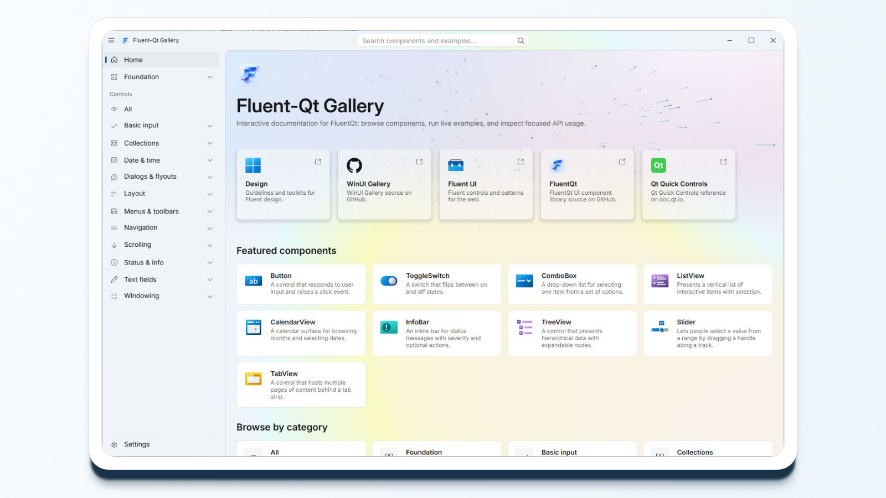
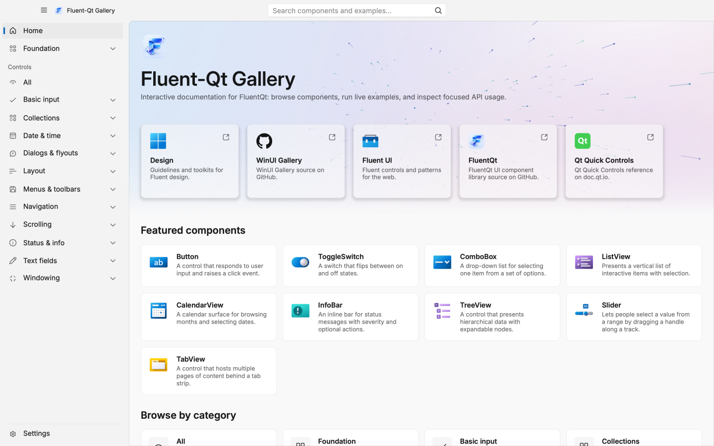
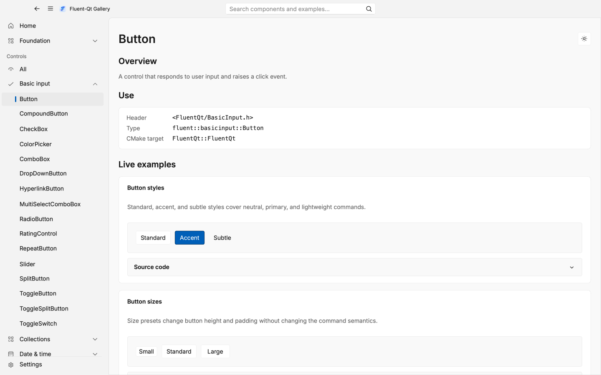
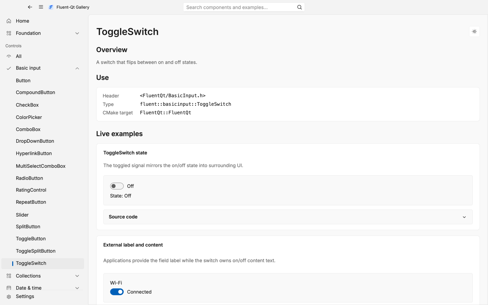
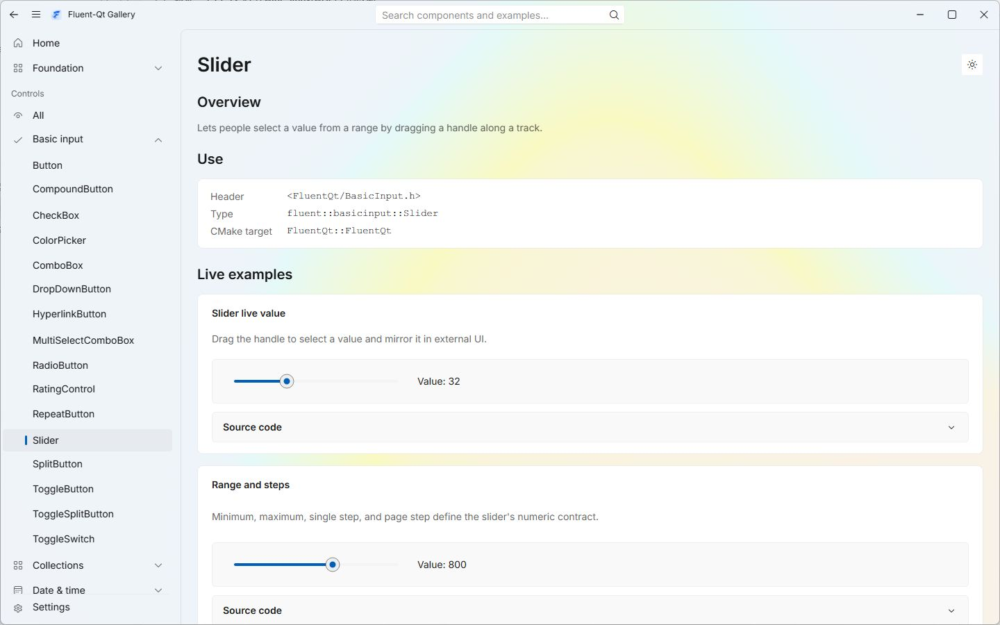
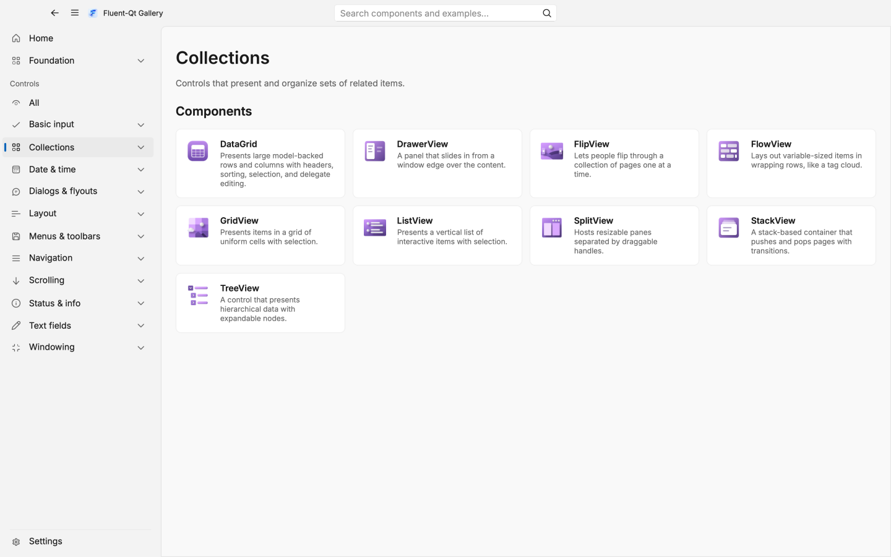
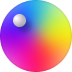
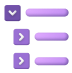

Fluent-Qt
基于 Qt Widgets 的 FluentQt uilib，附带 Gallery 演示应用。

依赖
C++17、Qt Widgets、CMake presets 和 vcpkg。
先编译 FluentQt uilib，再集成到业务项目；Gallery 用来查看控件效果。
C++17 / Qt 5.15+ / Qt 6.2+UI runtime
Qt Widgets，支持 Qt 5.15+ 或 Qt 6.2+。
Build
使用 CMake presets 和 vcpkg manifest mode。
Tests
库依赖 spdlog，测试使用 GTest。
Gallery
Gallery 用来查看控件效果。
它是独立演示应用，用来浏览控件、检查状态、对照主题设置。

Gallery 应用
可直接查看当前控件页面和运行状态。

按钮状态
用于检查按钮样式、状态和交互。

ToggleSwitch
用于检查二值设置控件。

Slider
用于检查范围和数值输入。

集合视图
用于检查列表、树和网格视图。
FluentQt uilib
业务项目链接 FluentQt::FluentQt 后使用这些控件。
Button
命令入口
ToggleSwitch
二值设置
Slider
连续数值
ComboBox
选项选择
LineEdit
聚焦文本输入

ColorPicker
可视化选色
NavigationView
应用外壳导航
TabView
多面板工具
ListView
密集行列表

TreeView
层级结构
ContentDialog
聚焦决策
InfoBar
内联状态提示
FluentQt uilib 使用
业务项目链接 FluentQt::FluentQt。
支持已安装 CMake 包，也支持源码子项目。最小消费示例见 examples/hello_world/。
核心目标是 FluentQt::FluentQt。
应用创建 QApplication，调用 fluent::initializeResources()，然后按命名空间使用控件。
安装包方式
find_package(FluentQt CONFIG REQUIRED) 后链接 FluentQt::FluentQt。
源码子项目
add_subdirectory 前可以关掉 Gallery、测试、install 和 Gallery 打包。
example
examples/hello_world/ 提供最小消费示例。
示例代码
CMake + QWidget
# CMakeLists.txt
find_package(FluentQt CONFIG REQUIRED)
target_link_libraries(my_app PRIVATE FluentQt::FluentQt)
// main.cpp
#include <FluentQt/FluentQt.h>
fluent::initializeResources();
auto* button = new fluent::basicinput::Button("Save", this);Gallery 可单独构建，用来查看控件效果。
Gallery 打包
CMakePresets.json 提供 Gallery 的打包 preset。
release 构建后使用 CPack 生成 Windows installer 或 macOS DMG。